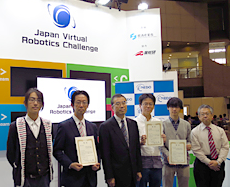

INFORMATION
Winner's name, the results of each team, photos of JVRC has been published.
>>Results page

We reported participation in CEATEC2015 and the award of JVRC, in the "recent developments" of NEDO's website.
>>http://www.nedo.go.jp/ugoki/ZZ_100416.html
"Representative point of the robot", "Setting example of BodyRTC corresponding to JVRC-1" has been fixed.
The competition schedule, the competition time, information about the other of the competition has been published.
>>More information
JVRC-1 model has been updated because there was an error of the speed limit set in several joints.
>>Download JVRC-1 of robot model
We have distributed the task model that corresponds to the latest task content.
>>Download the task model
We have distributed the task model of "Task_O1, O2, R1, R2L, R2M, R3A, R3B, R4A, R4B, R5 ".Task R6 will be published soon.
We opened "Information exchange forum of JVRC". Only the person concerned can do reading and writing.
>>Information exchange forum of JVRC
We will distribute the task model of
"Task_O1, Task_O2, Task_R1, Task_R2L, Task_R2M, Task_R3A, Task_R3B, Task_R4A, Task_R4B".
Task R5, R6 will be published soon.
>>Task model download
JVRC-1 model has been updated at 20 May 2015 because there was an error in the setting of the movable range.
>>JVRC-1 robot model download
Programming practice (JVRC participation course) will be held at RT middleware workshops of ROBOMEC2015 [Location: Kyoto Kangyo Hall "Miyako Messe" Date:Sun,17 May] .
>>More Info
The orientation meeting is held as one of the projects performed by Japan Virtual Robotics Challenge (JVRC) at the RoboCup Japan Open 2015 Fukui (Fukui Industrial Hall).
Whole Briefing Session
| Date | May 2-3, 2015 lunch break (Between the morning and afternoon of competition, about 1 hour) |
|---|---|
| Place |
RoboCup Japan Open 2015 Fukui In rescue actual field |
Individual explanation
| Date | May 4, 2015 10:00-12:00 |
|---|---|
| Place |
RoboCup Japan Open 2015 Fukui In rescue actual field |
| Summary | JVRC staff accept questions individually for the person who is interested in participation. |
A holding announcement of （Japan Virtual Robotics Challenge：JVRC） appeared on it in a home page of New Energy and Industrial Technology Development Organization (NEDO).